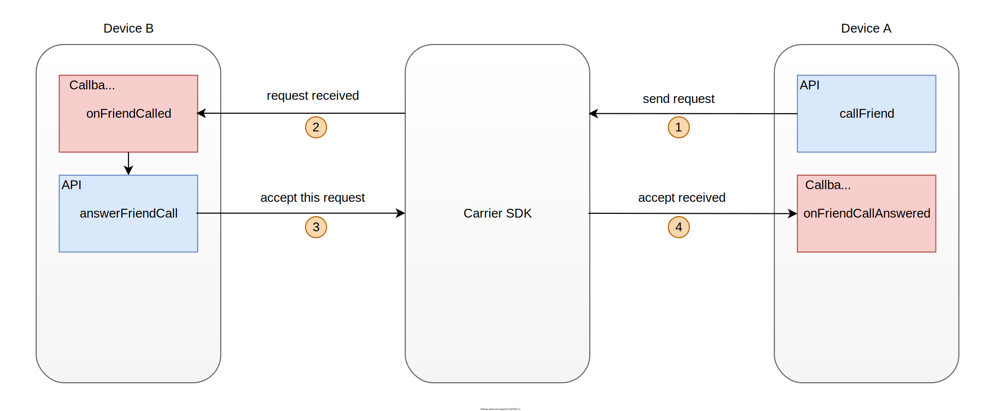
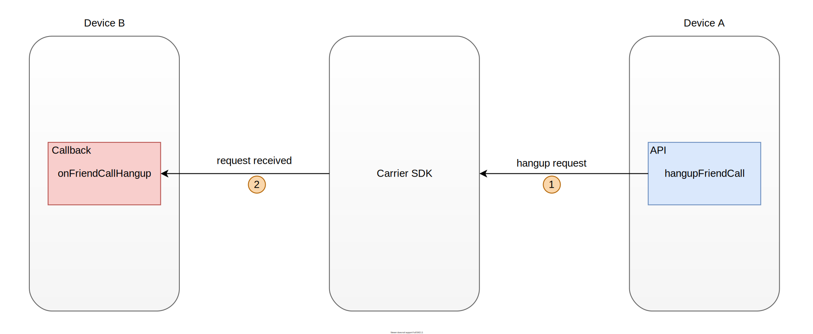

影音串流¶
一、建立串流通道¶
{kind=link}
當要發起視訊通話請求時，使用 API
callFriend：
Carrier.getInstance().callFriend(friendId);
friendId : The target id.
當收到來自好友的通話視訊請求時，會觸發 callback
onFriendCalled：
@Override
public void onFriendCalled(Carrier carrier, String friendid, boolean isAudioEnabled, boolean isVideoEnabled) {
}
carrier : A handle to the Carrier node instance.
friendid : The friend id from who send the request.
isAudioEnabled : If this call requires audio.
isVideoEnabled : If this call requires video.
同意好友的通話視訊請求，使用 API
answerFriendCall：
Carrier.getInstance().answerFriendCall(friendId);
friendId : Id of the friend.
當同意好友的通話成功時，好友會觸發 callback
onFriendCallAnswered：
@Override
public void onFriendCallAnswered(Carrier carrier, String friendid) {
}
carrier : A handle to the Carrier node instance.
friendid : Friend who answered the call.
二、進行影音串流¶
使用 API
sendVideoFrame來發送影像資料：
Carrier.getInstance().sendVideoFrame(friendId, width, height, y, u, v);
friendId : The target id.
width : Width of the frame in pixels..
height : Height of the frame in pixels..
y : Y (Luminance) plane data. Size must be height * width.
u : U (Chroma) plane data. Size must be (height/2) * (width/2).
v : V (Chroma) plane data. Size must be (height/2) * (width/2).
使用 API
sendAudioFrame來發送聲音資料：
Carrier.getInstance().sendAudioFrame(friendId, pcm, samples, channels, samplingRate);
friendId : The target id.
pcm : An array of audio samples. The size of this array must be (samples * channels).
samples : Number of samples in this frame. It equals ((samplingRate)*(audio length)/1000). Audio length can be choose from 2.5, 5, 10, 20, 40 or 60 millseconds.
channels : Number of audio channels. Supported values are 1 (Mono) and 2 (Stereo).
samplingRate : Audio sampling rate in Hz used in this frame. Valid sampling rates are 8000, 12000, 16000, 24000, or 48000.
當收到串流影像時，會觸發 callback
onVideoReceived：
@Override
public void onVideoReceived(Carrier carrier, String friendId,int width, int height,
byte[] y, byte[] u, byte[] v, int ystride, int ustride, int vstride) {
}
carrier : A handle to the Carrier node instance.
friendId : The friend who sent the data.
width : Width of the frame in pixels.
height : Height of the frame in pixels.
y : Y (Luminance) plane data. Size must be height * width.
u : U (Chroma) plane data. Size must be (height/2) * (width/2).
v : V (Chroma) plane data. Size must be (height/2) * (width/2).
ystride : Luminosity plane stride.
ustride : U chroma plane stride.
vstride : V chroma plane stride.
當收到串流聲音時，會觸發 callback
onAudioReceived：
@Override
public void onAudioReceived(Carrier carrier, String friendId, short[] pcm, int sampleCount, int channels, int sampleRate) {
}
carrier : A handle to the Carrier node instance.
friendId : Friend who sent the audio.
pcm : Array of audio sample. Its size is sample_count * channels.
sampleCount : Number of samples in the frames.
channels : Number of audio channels. Can only be 1 or 2.
sampleRate : Sample rate of the audio. Valid values are 8000, 12000, 16000, 24000, 48000.
三、關閉串流通道¶
{kind=link}
需要關閉串流通道時，可以使用 API
hangupFriendCall：
Carrier.getInstance().hangupFriendCall(friendId);
friendId : Id of the friend.
其他節點關閉串流通道時，會觸發 callback
onFriendCallHangup：
@Override
public void onFriendCallHangup(Carrier carrier, String friendId) {
}
carrier : A handle to the Carrier node instance.
friendId : Friend who hang up the call.